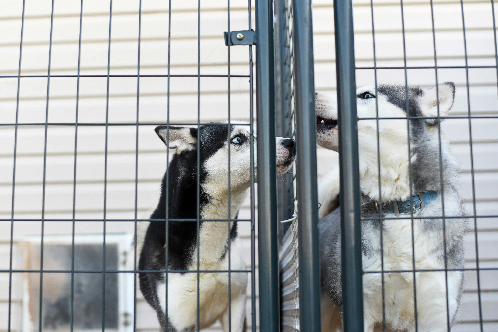

December 9, 2023
Embarking on the journey of pet adoption opens the door to a world filled with companionship, joy, and meaningful connections. As you consider welcoming a furry friend into your home, you're not just choosing a pet – you're choosing to make a difference in their life and yours.
Choosing to adopt a pet from a shelter is a compassionate decision that transforms lives. By providing a loving home for an animal in need, you become a crucial part of the effort to save lives. Your decision to adopt creates a ripple effect, offering a second chance and a brighter future for more animals. Each adoption is a powerful act of compassion that contributes to the well-being and happiness of these deserving pets
Adopting a pet plays a vital role in addressing the issue of pet overpopulation. When you choose adoption, you actively discourage the breeding of animals for profit. By opting for a shelter pet, you help break the cycle of homelessness and contribute to a more sustainable and humane approach to pet ownership. Each adoption is a step towards reducing the number of animals without a home and promoting responsible practices in the pet community.
The bond formed with an adopted pet is incredibly special. Animals from shelters often show deep appreciation for their new homes, showering their owners with unconditional love. The journey of an adopted pet involves a transformation—from the initial moments of hesitation and adjustment to the joyful expressions of loyalty and companionship. Your decision to adopt not only enriches your life but also provides a loyal companion who will stand by your side through thick and thin, creating lasting memories and heartwarming moments.
The decision to adopt a pet goes beyond bringing an animal into your home. It's a commitment to saving lives and experiencing the profound bond that comes with pet ownership.
Take that step, open your heart, and let the adventure of pet adoption begin – a journey filled with love, laughter, and countless heartwarming moments.